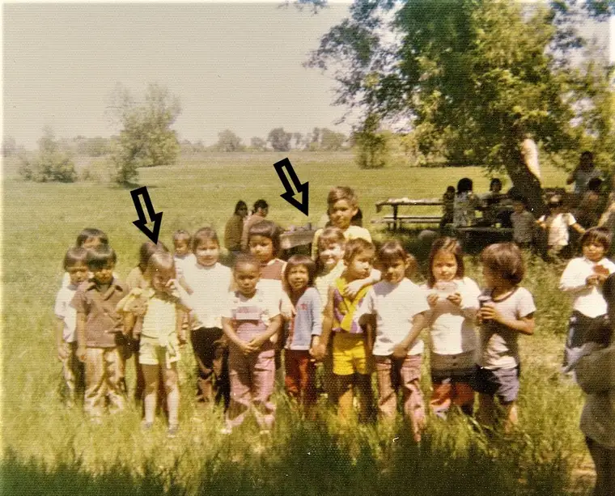

Recently, I helped organized a women’s conference for the Diocese of Fargo called “Trusted Sisters,” a follow-up to our first women’s conference, “Beloved Daughter,” several years ago. The idea in these themes is to seek out our true identifies as daughters of God.
Part of my job was to come up with questions to toss to the audience during the presentations through Slido, a technology through which participants can answer or ask questions through their Smartphones.
In thinking through our theme, we realized that some of the women might not have a lot of reason to feel trust, which can be shattered by human beings. “Maybe we need to bring them back to the first time they remembered feeling trust,” one offered. From there, we fashioned an appropriate question.
This caused a long-ago memory to stir; a time from early childhood. I was about 3 years old, and because my parents were both teachers, my sister and I were in preschool. Our family had moved recently from Wyoming to Poplar, Mont., center of the Fort Peck Reservation for Lakota and Assiniboine peoples. In that move, we had entered a world different than the one we had known.
It was much more than our light skin color that set us apart, however. It was also culture and what I would call “cousins.” For everyone seemed to be related or at least very familiar with one another. We were outsiders in this new world, and as a shy little girl, I felt scared and alone. If only my sister could be with me; she was in a separate group in another building for 4-year-olds.

But one day, one of the Native teachers chose me to go on an errand with her, and for a little while, everything changed. I felt noticed. I felt loved. I felt safe. I even recall the smell of her lotion and the contours of her face. And now, I see this memory in its proper light. This teacher was God letting me know I was valued and loved.
Recalling this brought an unexpected tear or two. It was powerful to recognize that act as a sign of God’s love for me when I was feeling so alone and uncertain.
Just hours after this year’s women’s conference ended, this revelation was called to mind again. One of our children had just experienced something disappointing, even devastating, for it challenged his feelings of self-worth. Driving him home from the event where he’d had this letdown, I decided to pass by our house, and instead, we just drove and talked.
In recent weeks, God had revealed how much he values me. Could I convey this same message to my own child, now in need of the same? One of the ways I did this was by relaying the story of God reaching out to me that day in preschool.
“He’s got his eye on you too,” I said. “He’s surveying the world around you, watching for people who are going to be your advocates, because Dad and I won’t always be near, but God always will.” Though it’s hard to say what was received, little by little, the disappointment of the evening seemed to lose its hold.
The next day, the message was further affirmed during my Lenten read, “Jesus, I Trust in You: A 30-Day Personal Retreat with the Litany of Trust,” by Sr. Faustina Maria Pia, S.V., author of the much-loved “Litany of Trust.” Sr. Faustina writes that by sharing himself with us, Jesus trusts us, taking the risk that He will not be believed or respected. “Despite this, to Him, we are still worth trusting, in the hope of arousing our hearts to trust Him in return.”
Jesus takes the first step in trust by first trusting us, and risking everything in the process!
In that same day’s meditation, Sr. Faustina writes: “When I struggle to believe God’s word, it is good to recognize that I am a word spoken by God. Sit in this truth: He spoke and I came to be.”
I can think of nothing more powerful to relay, to my 3-year-old self or any of our five children struggling with trusting in God, than the truth that God loves us so much, he spoke the desire of his heart, and we came to be, as gifts to the world.
If you feel a lack of trust, toward God or others, I highly recommend this book, along with reflecting on a time you first recalled feeling trust, and by the same token, God’s pure love. Perhaps a memory will stir to remind you, too, that God has always been near, and will never abandon you.
Q: What has made it hard for you to trust God with your whole heart? Can you return to a trusted place to begin healing that fractured trust?